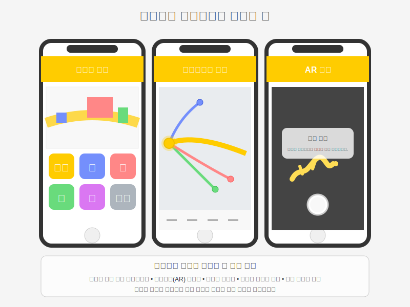

개선방안 개요
황룡강을 중심으로 장성의 역사·문화·자연 자원을 하나의 유기적인 스토리텔링으로 연결하는 '장성 스토리로드'를 개발하여 관광객들에게 몰입형 관광 경험을 제공합니다.
개선방안의 방향성
장성군의 관광 현황과 문제점 분석을 통해 도출된 개선방안은 다음 네 가지 핵심 방향으로 구성되어 있습니다:
- 테마별 스토리로드 개발: 황룡강을 중심으로, 백양사, 필암서원, 홍길동 테마파크 등 주요 관광자원을 유기적인 스토리라인으로 연결
- 디지털 기술을 활용한 스토리텔링: 모바일 앱, AR/VR 기술 등을 활용하여 현대적이고 몰입감 있는 관광 경험 제공
- 참여형 프로그램 개발: 지역 주민이 직접 참여하는 스토리텔러 양성, 계절별·테마별 특화 프로그램 운영
- 효과적인 홍보·마케팅 전략: 통합 브랜딩, 온·오프라인 마케팅, 관광 상품화 등을 통한 방문객 유치
장성 스토리로드 개념도
4대 핵심 개선방안
5대 스토리라인
| 스토리로드 | 주요 내용 | 핵심 관광지 |
|---|---|---|
| 황룡의 전설 로드 | 황룡강의 역사와 전설을 따라가는 생태·역사 탐방로 | 황룡강 생태공원, 황룡 전적지 |
| 선비의 길 | 필암서원을 중심으로 조선 선비문화 체험 | 필암서원, 하서 유적지, 장성향교 |
| 홍길동 영웅담 로드 | 홍길동의 생애와 활약상을 체험하는 모험 코스 | 홍길동 테마파크, 활빈당 체험장 |
| 불교문화 순례길 | 백양사를 중심으로 한 명상·힐링 코스 | 백양사, 비자나무 숲길, 청류암 |
| 장성 맛과 멋 여행길 | 지역 특산물과 먹거리를 체험하는 미식 로드 | 농업박물관, 사과농장, 장성시장 |
장성 5대 스토리라인 지도
디지털 기술 활용 개요
통합 모바일 앱 「황룡의 숨결」
AR/VR 기술과 위치 기반 스토리텔링을 활용한 몰입형 관광 가이드 앱으로, 관광객에게 맞춤형 정보 제공 및 스탬프 투어, 리워드 시스템 등 다양한 참여 기능을 구현합니다.
현장 기반 디지털 인프라
QR코드 기반 정보 시스템, 스마트 정보 키오스크, 공공 Wi-Fi 등 관광객 편의성을 높이고 몰입감 있는 경험을 위한 스마트 관광 인프라를 구축합니다.

참여형 프로그램 개요
지역 주민 주도 스토리텔러
지역 주민들이 직접 장성의 이야기를 전달하는 스토리텔러로 활동하도록 양성하고, 주민 참여형 체험 프로그램 개발을 지원합니다.
- 스토리텔러 양성 과정 (기본/심화/전문)
- 마을별 특화 프로그램 운영
- 세대 간 연계 프로그램
계절별·테마별 특화 프로그램
사계절 내내 관광객들이 방문할 수 있도록 계절별, 테마별 특화 프로그램을 개발하여 운영합니다.
- 봄: 황룡강 꽃길 스토리 투어
- 여름: 야간 별빛 스토리텔링 투어
- 가을: 단풍 트레킹과 역사 이야기길
- 겨울: 설화(雪花)와 설화(說話)의 겨울
통합 패스포트 시스템
실물 및 디지털 패스포트를 통해 관광객의 여정을 기록하고, 다양한 인증과 리워드를 제공하는 시스템을 구축합니다.
- 40페이지 스토리북 겸 패스포트
- 테마별, 종합, 마스터 인증 시스템
- 단계별 리워드 프로그램
- 특별 이벤트와 히든 스탬프
홍보 및 마케팅 전략 개요
통합 브랜딩 및 스토리 콘텐츠
황룡을 모티브로 한 통합 브랜드 아이덴티티를 개발하고, 이를 바탕으로 한 캐릭터와 스토리 콘텐츠, 기념품 등을 제작합니다.
온·오프라인 마케팅 전략
SNS 채널 운영, 인플루언서 협력, 거점 홍보, 이벤트 및 로드쇼, 미디어 홍보 등 다양한 채널을 통한 효과적인 마케팅을 진행합니다.
관광 상품화 및 연계 프로그램
테마별, 타겟별 맞춤형 관광 상품을 개발하고, 교통 및 숙박 연계, 지역 및 기업 협력 프로그램 등을 통해 종합적인 관광 경험을 제공합니다.
종합적 개선방안의 효과
장성군의 다양한 관광자원을 스토리텔링으로 연결하고, 디지털 기술, 참여형 프로그램, 효과적인 마케팅을 통해 단순 관람이 아닌 몰입형 관광 경험을 제공함으로써, 관광객의 체류시간 연장, 재방문율 증가, 그리고 지역경제 활성화 효과를 기대할 수 있습니다. 특히 2025 장성 방문의 해를 맞아 이러한 통합적 관광 전략은 장성군의 관광산업 발전에 큰 기여를 할 것입니다.